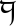
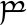
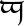
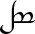
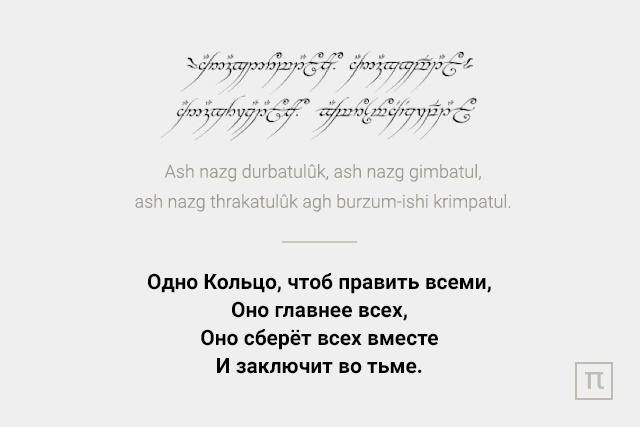

Эльфийский язык, который можно услышать в том или ином фильме, является в действительности одним из наречий, придуманных Дж. Толкином. А таких более пятнадцати: эльдарин, тэлерин, лемберин, квенья, синдарин (сероэльфийский), голдогрин и многие другие. Для каждого автор придумал расу со своей историей и ее изменениями, в ходе которых совершенствовалась сама речь.
За основу Джон Рональд Руэл Толкин взял древнескандинавский, валлийский, староанглийский, латинский и финский. Если пытаться разобрать каждый из них, велика вероятность запутаться, поэтому мы разберем лишь те, которые Дж. Толкиен поместил на книжные страницы своих рассказов.
На иллюстрации ниже представлен алфавит эльфийского языка, носящий название тенгвар. Все буквы эльфийского языка представлены с переводом на русский язык. Представленный алфавит поможет вам правильно переводить слова и фразы на эльфийский язык с русского языка. Однако, в силу ряда причин, перевод на эльфийский язык - задача не из простых.
| Тенгвал | Кириллица | ||||||
|---|---|---|---|---|---|---|---|
|  | Т | П | Ч | К | |||
|  |  | Д | Б | (ДЖ) | Г | ||
 |
— | Ф | Ш | Х | |||
| — | В | Ж | Г. | ||||
| Н | М | — | — | ||||
| — | У | Й | Ъ | ||||
| Р | — | Л | — | ||||
| С | С | З | З | ||||
|  | — | — | — | — | |||
| Щ | Ц | Ы | Ь | ||||
Синдарин
Это конечная версия, доработанный, интереснейший из двух самых популярных эльфийских диалектов. Дословно переводится как «серое наречие». Следуя мифологии Толкиена, на синдарине говорили серые эльфы из племени Тэлери. В ходе Великого похода они решили остаться в Белерианде, и в конце концов их язык стал отличаться от наречий других племен, уплывших за море.
Синдарин, используемый в книге, это уже претерпевший изменения, самостоятельный язык Третьей эпохи. Именно по нему написано большинство учебников.
Особенности синдарина
Произношение гласных не зависит от положения в слове, они почти всегда произносятся одинаково. Как правило, все они краткие. Каждая буква произносится отдельно друг от друга, даже если их несколько подряд. В каждом языке есть свои исключения. Так и здесь существует шесть дифтонгов, когда две гласные выступают за один звук. Это то, что следует выучить. Первый элемент всегда будет находиться под ударением. С согласными проще, они звучат как в английском. Но стоит знать, что двойные согласные произносятся дольше одиночных.

На эльфийском языке говорят в фильмах, книгах и многочисленных компьютерных играх (WOW, Dragon Age, Ведьмак). На самом деле, отдельные фразы эльфийского языка встречаются довольно часто. Популярности эльфийского языка способствует еще и его специфическое мелодичное звучание. Как звучит эльфийский язык вы можете послушать на страницах этого сайта.
Квенья
Это искусственный язык, его грамматика и орфография в большей части заимствована из греческих и латинских слов. Он много раз переписывался. Попутно Толкиен описывал народ, который говорил на нем, их историю и обычаи, то самое Средиземье. Известная во всем мире история хоббитов, гномов и эльфов, как раз родилась из этих описаний, став классикой мирового фэнтези.
Однако в самом романе мы не встречаем самого квенья, потому что во времена описываемых событий он вышел из употребления, став «мертвым» языком. Сам Дж. Толкиен назвал его «эльфийской латынью», наречием высших эльфов.
Особенности квенья
Гласные на письме отличаются длиной произношения. Долгие помечают ударением, краткие четкие и без вариаций. Дифтонгов, как и в синдарине шесть единиц. С согласными связано несколько правил, но в основном они звучат как в привычном для нас английском языке. Ударение определяется, как и в синдарине. Все это свидетельствует о том, что квенья является прародителем синдарина.
Изучение эльфийского языка
На сегодняшний день создано огромное количество учебников и пособий по эльфийским языкам. В них существуют отличия по грамматике и произношению. Но они не такие существенные. Ведь это в первую очередь выдуманный язык. Сам Толкиен один-единственный раз записал, как он читает по-эльфийски стихи, посвященные своей дочери. Только по нему можно примерно понять, как же все-таки произносятся звуки в синдарине.